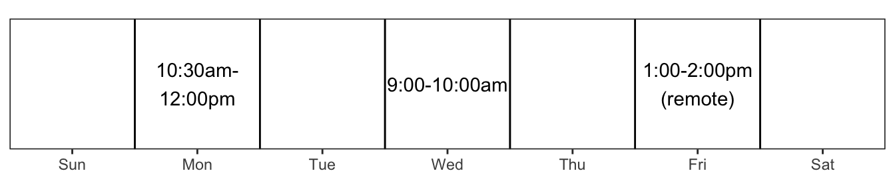
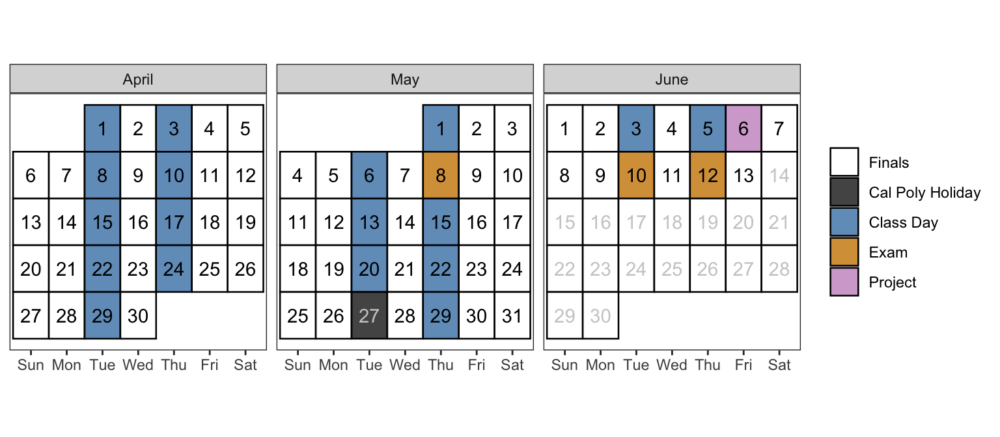

Stat 331/531: Statistical Computing with R Syllabus
Spring 2025
Communication
Dr. Charlotte Zilber Mann
You can call me Professor, Professor/Prof. C. or Dr. C.
Email: czmann@calpoly.edu
Office: Building 25 Office 201
Email:
- Only email me with your @calpoly.edu email – I cannot respond to other email addresses
- Start your email subject line with “[STAT 331]”
- I will do my best to respond within 24 hours during the week
- If you send me an email past 7pm or on the weekend, I will likely not respond until the morning of the next working day
- You should only email me about things that relate to you as an individual. Any other questions should be posted on the course Discord (more details below).
Course Discord Page:
For questions of general interest, such as course clarifications or conceptual questions, please use the course Discord page (you will join this Week 1). If you have a question – someone else in class does too! I encourage you all to respond to each other. I will do my best to check Discord at least twice each weekday during working hours (8-6) to ensure that questions are being answered accurately.
I encourage you to give your post a concise and informative initial sentence, so that other people can find it. For example, “How do I color bars in a barplot with ggplot?” is a better opening sentence than “help with plotting”.
You may post snippets of your code and errors on Discord, but please do not post full solutions to lab assignments.
While your posts are not anonymous, in this case there is no such thing as a bad question!
Course Logistics
Class Meeting Times: Tuesdays / Thursdays
- Section 70: 9:10am - 11:00am
- Section 71: 12:10pm - 2:00pm
Room: - Section 70: 38-122 (Math & Science) - Section 71: 180-272 (Baker Center - Math & Science)
Office Hours are held in my office (25-201) during the following times:
- Office hours are for you! During this time, I am available to talk about anything related to the course.
- Office hours are also helpful for me… This is my chance to get to know you all better and also get a good idea of what is most challenging and most interesting to you.
- Friday office hours will be remote by default, but can be in-person on request.
- See this resource for ways that students use office hours.
- One thing I will not do during office hours is tell you whether an answer to a problem is “correct” or not. We can talk through your thinking that led to your solution, but will leave the final assessment to once you have submitted an assignment.
- Note that office hours are not just for when you have content questions. Stop by to introduce yourself, ask questions about the broader field of statistics, or share what you are working on!
Course Description
Stat 335/531 provides you with an introduction to programming for data and statistical analysis. The course covers basic programming concepts necessary for statistics, good computing practice, and use of built-in functions to complete basic statistical analyses.
Prerequisites
Entrance to STAT 331/531 requires successful completion of:
- a Stat II qualifying course, and
- an introductory programming course.
Learning Objectives
This course will teach you the foundations of statistical computing principles in the language of R.
After taking this course, you will be able to:
- Work with the RStudio Integrated development environment (IDE) and quarto documents.
- Import, manage, and clean data from a wide variety of data sources.
- Visualize and summarize data for informative exploratory data analysis and presentations.
- Write efficient, well-documented, and tidy
Rcode. - Program random experiments and simulations from probability models.
Additionally, it is my hope that you will learn to:
- Extend your
Rskills independently through documentation and online resources. - Be thoughtful, deliberate, and ethical in your use of
Rand similar tools. - Use R to be playful, creative, and fun!
- Contribute to and participate in the R Open Source Community.
Course Materials
Course Webpage (Canvas)
All course material will be made available on our Canvas page, including check-ins, practice activities, lab assignments, challenges, review questions, and selected solutions. Canvas will also contain detailed weekly schedules throughout the term. You are responsible for checking the Canvas page on a regular basis.
I will also be posting material on this website for easy access to materials. Please note that this website does not include deadlines and all material will additionally be posted to Canvas. Canvas will always contain the most updated information about course deadlines and details, so always defer to these.
Textbook
https://manncz.github.io/stat331-calpoly-text/.
There is an abundance of free online resources for learning programming and R. Therefore, the primary text for this course is a compilation of various resources - it is available online for free. It is a work in progress, so expect changes and updates throughout the course.
This text was constructed by Dr. Emily Robinson and was modified from material by Dr. Susan VanderPlas. See Statistical Computing using R and Python for her course book with integration of content and videos from Dr. Allison Theobold and Dr. Kelly Bodwin.
In addition, you may find it useful to reference some of the following resources that Dr. Robinson consulted while assembling the text. Most are available online for free.
Computing
Although you may always work on the computers in the classroom, I strongly recommend that you use your own personal laptop for this course if you have one.
We will (obviously) be using the R statistical software throughout this course. In addition, you are required to use RStudio, a companion integrated developer environment (IDE). Both R and RStudio are freely available. Download instructions are available on Canvas.
Warning
Chromebooks and iPads will not be sufficient to use R. If this requirement is limiting for you, please contact me ASAP.
Class Schedule & Topic Outline
This schedule is tentative and subject to change.

| Date | Topic |
|---|---|
| Apr 1, Apr 3 | Introduction to R |
| Apr 8, Apr 10 | Basics of Graphics |
| Apr 15, Apr 17 | Data Cleaning and Manipulation |
| Apr 22, Apr 24 | Data Transformations + Factors |
| Apr 29, May 1 | Special Data Types |
| May 6 | Version Control |
| May 8 | Midterm Exam |
| May 13, May 15 | Functions |
| May 20, May 22 | Functional Programming |
| May 29 | Simulation |
| Jun 3, Jun 5 | TBA |
| Jun 6 | Project Final Report Due |
| Jun 10 | Final Exam (70) 10:10am - 1:00 pm |
| Jun 12 | Final Exam (71) 10:10am - 1:00 pm |
Assessments
General Evaluation Criteria
In every assignment, discussion, and written component of this class, you are expected to demonstrate that you are intellectually engaging with the material. I will evaluate you based on this engagement, which means that technically correct but low effort answers which do not demonstrate engagement or understanding will receive no credit.
When you answer questions in this class, your goal is to show that you either understand the material or are actively engaging with it. If you did not achieve this goal, then your answer is incomplete, regardless of whether or not it is technically correct. This is not to encourage you to add unnecessary complexity to your answer - simple, elegant solutions are always preferable to unwieldly, complex solutions that accomplish the same task.
While this is not an English class, grammar and spelling are important, as is your ability to communicate technical information in writing; both of these criteria will be used in addition to assignment-specific rubrics to evaluate your work.
Formative Assessments
Check-ins
Each week, you will find short Check-In questions or tasks throughout the text to make sure you are prepared for class that week. Check-Ins are based on the material in each week’s reading from the textbook. Note that the Canvas Check-in quizzes can be submitted two two times and your highest score will be kept, so you should get close to 100% on this part of the course!
- Check-ins are (typically) due Tuesdays before class.
- Section 70: 9:00am
- Section 71: 12:00pm
Practice Activities
Most Tuesdays’s, you will be given a Practice Activity to complete, to get the hang of the week’s necessary R skills. These activities will always result in a single, straightforward correct answer, that you will submit via Canvas (two attempts, the average score being kept).
Since these activities are intended to be your first attempt at new skills, they are meant to be done with help from me and your peers. Therefore, you will always be given some time in class to work on them.
- Practice Activities are (typically) due Thursdays before class.
- Section 70: 9:00am
- Section 71: 12:00pm
Lab Assignments
Your typical homework assignments will be weekly labs. You will follow each lab’s instructions to complete tasks in R and submit a rendered .html Quarto document to Canvas.
Most weeks, there will be class time on Wednesdays dedicated to working on completing lab assignments. While you will work with peers during class time on Thursdays, you will be expected to submit your own individual work for the final submission.
- Labs are (typically) due on Mondays (of the following week) at 11:59pm.
Evaluative Assessments
Final Project
There will be a data analysis project to be completed throughout the second half of the term. You will work in a group of 3-4 people. Each group will produce a written project report covering linear regression and model simulation. More information will follow on Canvas.
Exams
There will be a midterm exam and a final exam. The midterm will have both in-class and take-home portions. The final will be entirely in-class during our scheduled final exam slot. More information will follow.
Course Grade
Your grade in STAT 331/531 will contain the following components:
| Assignments | Weight |
|---|---|
| Check-ins | 5% |
| Practice Activities | 10% |
| Lab Assignments | 30% |
| Midterm Exam | 15% |
| Final Project | 15% |
| Final Exam | 25% |
Lower bounds for grade cutoffs are shown in the following table. It is possible that I could lower any of the grade cutoffs. You will only have the opportunity for grade rounding if you completed all assignments in the course.
| Letter grade | X + | X | X - |
|---|---|---|---|
| A | . | 93 | 90 |
| B | 87 | 83 | 80 |
| C | 77 | 73 | 70 |
| D | 67 | 63 | 60 |
| F | <60 |
Interpretation of this table:
- A grade of 85 will receive a B.
- A grade of 77 will receive a C+.
- A grade of 70 will receive a C-.
- Anything below a 60 will receive an F.
Course Policies
Attendance & Participation
I do not take formal attendance in this class. However, it is my expectation that you remain in class and on task until you have finished all your activities and assignments.
If you are feeling ill, please do not come to class.
Here’s what you should do if you do miss a class:
- Talk to a classmate to figure out what information you missed
- Check Canvas for any necessary handouts or changes to assignments
- Post on Discord with any questions you have after reviewing notes and handouts
If you miss a bunch of classes, please come talk to me. I’m working from the assumption that you care and are trying, but something is getting in your way (health issues? college stress? work?); let’s figure out what that is and how I can help.
Accessibility and Accomodations
I have taken numerous steps to ensure that all of the materials presented in this course are accessible to all participants, regardless of physical or learning disabilities. I know that everyone is unique and I may have unintentionally overlooked something that limits access to some materials or activities. Please let me know if you cannot access any content. If you find you need additional accommodations to complete the required course work, please contact me as soon as possible! I want to support your success.
If you wish to request disability-related accommodations such as extra exam time for this or any other course, please contact the Disability Resource Center. It’s important to do this with as much advanced notice as possible, so you have full access to your course materials and activities in a timely manner. Please also email me to let me know that I should expect an email from the DRC to get you the accommodations that you need.
Inclusive Classroom
Because data are collected by and about humans, data necessarily encode aspects of our proclivities and biases. As a result, this course may touch upon difficult topics related to race, gender, inequality, class, and oppression. We each come into this class with different perspectives that can be shared to enhance our understanding of these issues. I ask that you enter these conversations with respect, curiosity, and cultural humility. You should be open to alternative perspectives and be willing to revise beliefs that are based on misinformation. As a general rule, your ideas and experiences can always be shared during these conversations, but please refrain from dismissing the experiences of others. Personal attacks of any kind will not be tolerated.
Group Work
This course will rely heavily on in-class group work. You will be expected to work with classmates on in-class material. If you have concerns about random group assignment, please talk to me at the start of the term.
You are also encouraged to discuss your ideas for lab assignments; however, I expect that these collaborations are about ideas and no R code is shared. Each person’s lab assignment submissions are expected to reflect their own thinking, and thus copying the work of others does not provide me with any information about your learning.
The community standards for student-to-student and student-to-instructor interactions include the following:
- Listen actively and attentively.
- Ask for clarification if you are confused.
- Challenge one another respectfully.
- Gracefully accept constructive criticism.
- Take responsibility for the quality of the discussion and the work.
- Do not monopolize discussion.
- Acknowledge that everyone has something to offer.
- Speak from your own experience, without generalizing.
Late Policy
Everyone will be given a “bank” of 4 deadline extensions which can be used on Check-ins, Practice Activities, and Lab Assignments at any point in the quarter. One deadline extension will get you a 24 hour extension on a given assignment. You can use all of your deadline extensions on one assignment or split them up in any way.
- Like how the “real world” works, you must request a deadline extension before the deadline. To use your deadline extensions, you need to email me before the assignment deadline. You don’t need to get a response from me, you just need to email me at least a minute before the deadline.
- If you do not email me before the assignment deadline (or you run out of late days), you will be docked 20% for each day that the assignment is late. (e.g. you can get a maximum of 80% on the assignment if it is submitted within 24 hours after the original due date and time.)
A note on this policy: my priority is for all of you to engage with and understand the course materials. The best way to achieve this is to complete all assignments and receive feedback on your work. At the same time, I understand that things happen outside of our control and that you are balancing many responsibilities.
Automatic Canvas Settings
Canvas is set up to automatically input 0% for missing assignments (as an incentive to go complete the assignment) and apply the 20% grade deduction policy. I will need to manually adjust your grade when you use your “deadline extensions.” You are responsible for double checking your grade to make sure I didn’t miss anything.
If you find yourself with extenuating circumstances beyond the defined late policy, please email me before the due date.
Exam Conflicts
If you have a known conflict with an exam, please discuss it with me at least three weeks prior to the exam date. If an illness or a family emergency arises, please let me know as soon as possible, and we will work out a solution. This may involve taking the exam at a later date or replacing the missed exam score with the final exam score. If you are unable to take the final exam, you will likely receive an Incomplete in the course.
Course Expectations
For Students, I expect:
- You will ask lots of questions.
- You will do reading and other assignments outside of class and be prepared for each class meeting.
- If you find yourself struggling or feel that you are falling behind, please reach out to me as soon as possible so that we can develop a plan for your success together.
- You will take advantage of the resources that I provide and to seek out additional resources if you find that you are struggling with the material. You do not need to seek out additional resources all on your own – we can figure out what additional resources you may need.
- You will be doing your best to engage with what we are all doing together during class. This means that you are using technology (i.e. laptops/tablets/phones) for class activities and not in ways that distract you.
- You will approach the course with academic integrity.
- You will come to class on time and work on class material with your peers.
- Everyone can learn the material in this course.
For Me:
- I am responsible for ensuring that all students feel welcome and valued in the classroom.
- I am responsible for providing the resources necessary so that all students in the course can achieve the learning objectives.
- I am responsible for providing prompt and clear feedback on your coursework.
- I welcome and appreciate any actionable feedback regarding how the class is meeting your learning needs. We can discuss ways to adjust the course to ensure it is supporting your learning and do more of anything that is working well!
Make Mistakes!
Programming is the process of making a series of silly or stupid mistakes, and then slowly fixing each mistake (while adding a few more). The only way to know how to fix these mistakes (and avoid them in the future) is to make them. (Sometimes, you have to make the same mistake a few dozen times before you can avoid it in the future). At some point during the class, you will find that you’ve spent 30 minutes staring at an error caused by a typo, a space, a parenthesis in the wrong place. You may ask for help debugging this weird error, only to have someone immediately point out the problem… it is always easier to see these things in someone else’s code. This is part of programming, it is normal, and you shouldn’t feel embarrassed or sorry (unless you put no effort into troubleshooting the problem before you asked for help)
If you manage to produce an error I haven’t seen before, then congratulations. You have achieved something special, and that achievement should be celebrated. Each new and bizarre error is an opportunity to learn a bit more about the programming language, the operating system, or the interaction between the two.
Academic Integrity and Class Conduct
Our academic community is at its best when we treat each other with fairness, honesty, respect, and trust. Unfortunately, sometimes students slip up and do something that gives themselves (or someone else) an unfair advantage over other students. Such actions will not be tolerated in this class.
It is most likely that a student will slip up if they are feeling overwhelmed or unsure of how to approach a problem that they are stuck on. So let’s be proactive to prevent those situations!! If you are helpless in an assignment or in studying, post on discord, come to office hours, or email me or one of your classmates! I am working hard to provide all of the resources you need to succeed
However, the college doesn’t really care if you break the rules on purpose or by accident. If I suspect you have done something that violates academic integrity on any graded elements of the course (included those graded for completion), you will receive an email to tell you about my suspicion and how the situation will be handled. Typically, students earn a 0 for the assignment on which academic misconduct is found. University policy dictates that we must report every instance of suspected academic dishonesty to the Office of Student Rights and Responsibilities, no matter how small. For more information on academic misconduct and what constitutes cheating and plagiarism, please see academicprograms.calpoly.edu/content/academicpolicies/Cheating.
It is important to note that paraphrasing or quoting another’s work without proper citation is a form of academic misconduct. This includes the R code produced by someone else! Writing code is like writing a paper, it is obvious if you copied-and-pasted a sentence from someone else into your paper because the way each person writes is different.
Even inadvertent or unintentional misuse or appropriation of another’s work (such as relying heavily on source material that is not expressly acknowledged) is considered plagiarism. This includes using Chat GPT, which should only be used to help you problem solve just as a tutor or peer would, and not as a substitute for your own work. If you are struggling with writing the R code for an assignment, please reach out to me. I would prefer that I get to help you rather than you spending hours Googling things and get nowhere!
Always Cite Outside Resources!
In this class the assumed knowledge is the course materials, including the course textbook, coursework pages, and course slides. If you use outside resources on assignments I expect that you will cite those resources. This means that
- If you use any
Rfunctions or code that are not in the course materials, you must cite where you found it. e.g., if you look up the help file formutate()and you learn about a function not covered in the course materials, you are required to cite the documentation when using that function. - If you use Google you are expected to “inform” me of any resources you used by pasting the link to the resource in a code comment next to where you used that resource.
- If you use ChatGPT you are expected to “inform” me by stating that you used it in a code comment next to where you used it including the full prompt that you gave ChatGPT.
- If you work with classmates on an assignment, you are expected to “inform” me by including a note with their names.
If you have any questions about using and citing sources, you are expected to ask for clarification.
Learning Environment and Support
My priority is your success in this course. I understand that things happen unexpectedly and obtaining official accommodations can be slow.
If you feel that any circumstances or factors beyond your control may affect your presence and work in this class, please reach out to me and we will work to accommodate your needs. You do not need to share personal information with me when you reach out, unless you would like to.
Mental Health
National surveys of college students have consistently found that stress, sleep problems, anxiety, depression, interpersonal concerns, death of a significant other and alcohol use are among the top ten health impediments to academic performance. If you are experiencing any mental health issues, I and Cal Poly are here to help you. Cal Poly’s Counseling Services (805-756-2511) is a free and confidential resource for assistance, support and advocacy https://chw.calpoly.edu/counseling.
Support Services
If you are experiencing food insecurity, housing instability, or other challenges that may impact your ability to succeed in this course, please refer to the resources listed on Canvas under “Student Support Services at Cal Poly.” These resources provide a range of essential support services, including emergency financial assistance, counseling, and academic support.